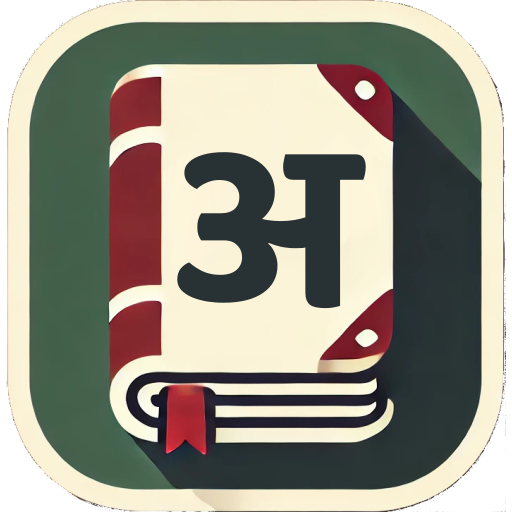

UNOES Dictionary Live 1st service / 模索期
AI ツールを乗り換えながら、約1年かけて本番投入したマルチプラットフォーム辞書アプリ
UNOES は私にとって最初の本格的な AI 駆動開発プロジェクトです。 2025年4月〜2026年4月、中断期間を含むおよそ1年間で、 iOS / Android / Web / Windows をターゲットにした辞書アプリと Go バックエンドを個人開発しました。 「AI 駆動開発はどう進めるべきか」を答えのないまま模索した期間でもあり、 ツールを乗り換えるたびに開発スタイルが大きく変わっていきました。
Phase 1 2025/04 – 2025/夏
ChatGPT（コード生成→コピペ）
仕様や設計の壁打ち、コード片を ChatGPT に書かせてエディタに貼る、というスタイル。手戻りも多く、コードベース全体の文脈は AI 側に残せませんでした。
Phase 2 2025/夏 – 2025/秋
Cursor AI（IDE 内 AI 補助）
エディタ統合の AI に切り替え、コードベース全体を参照させながら編集できるようになり生産性が大幅向上。ただしレビュー観点は属人化したまま。
Phase 3 2025/秋 – 2026/04
Claude Code（エージェント駆動）
Claude Code に移行し、CLAUDE.md / memory にプロジェクト固有ルールを残し、機能ごとに SPEC → PLAN → TEST → IMPL → REVIEW を Markdown で蓄積する現在のスタイルを確立。
この模索期に得たのは「AI に書かせる」ではなく「AI と一緒に意思決定を文書で残す」開発スタイルでした。 次の GIVErS では最初からこのワークフローを適用しています。
- JWT + リフレッシュトークン認証（admin / editor / subscriber / guest ロール）
- Stripe / Google Play 両プロバイダーのサブスク（解約 / 期限切れ / ロール降格を一元管理）
- IP 単位 + 経路別レート制限による DOS 対策ミドルウェア
- 辞書エントリの4段階編集ステータス（draft / review / published / archived）とフィルタ
- 全操作の監査ログとフィードバック機能
- Web 版 Google ログイン（admin / editor 向け）、AdSense ネイティブ広告、リワード広告
- Flutter から iOS / Android / Web / Windows へワンソース配信